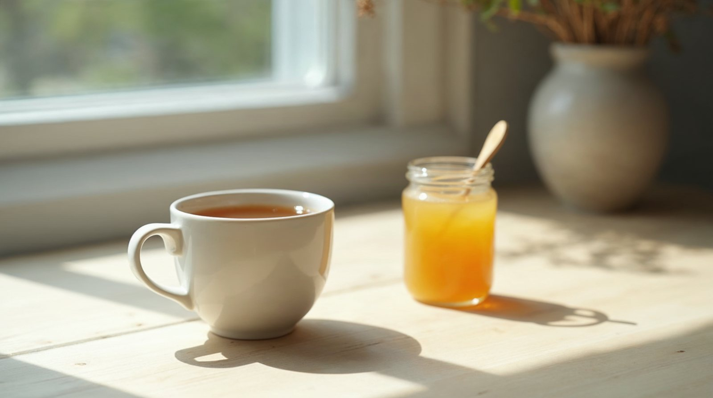
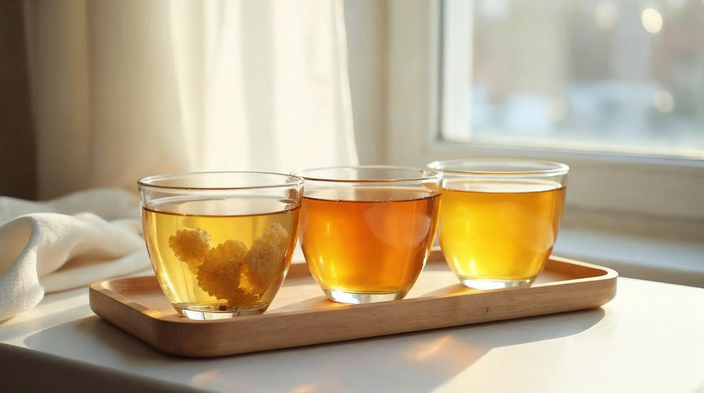
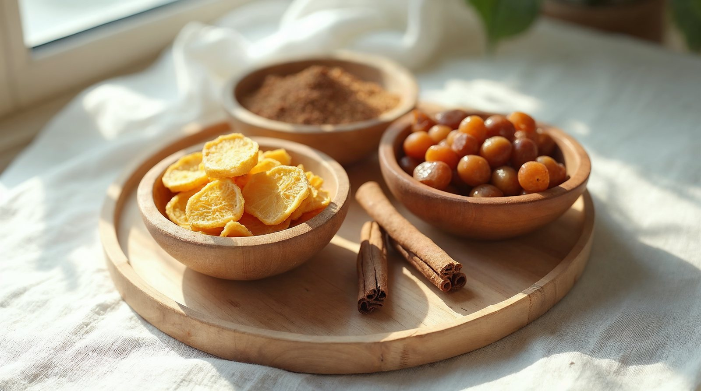
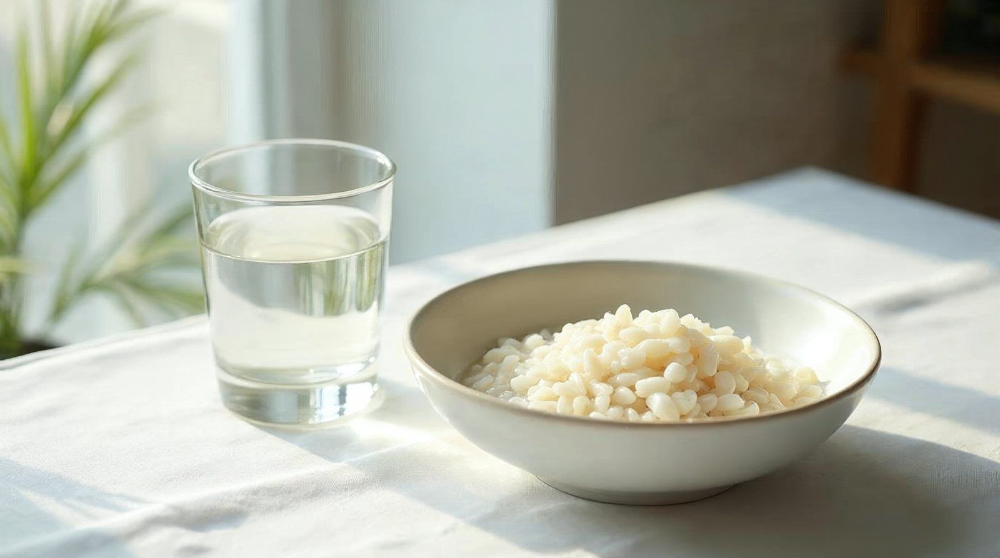
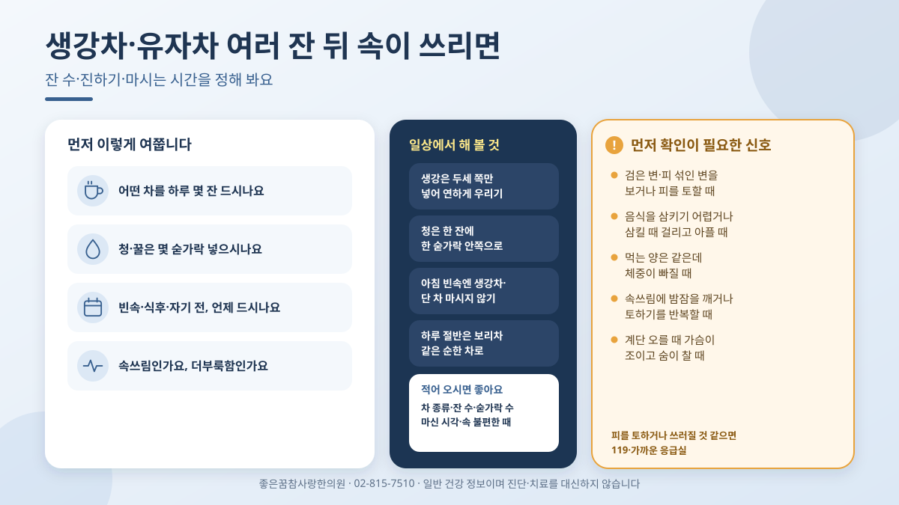

이종호 한의사 감수좋은꿈참사랑한의원 대표원장 (한의사 면허번호 19769)발행 2026-11-27 · 수정 2026-11-27
이 글의 차례
찬바람이 불기 시작하면 사무실 탕비실에 유자차와 생강차 병이 놓이고, 집에서도 으슬으슬하거나 목이 칼칼한 날이면 꿀차와 대추차를 끓여 하루 내내 손에 들고 지내는 분이 많습니다.
따뜻한 차는 손과 몸을 데우고 마음을 느긋하게 해 주지만, 진하게 우린 생강차를 하루 대여섯 잔씩 마시거나 청을 두세 숟가락씩 넣은 달달한 차를 빈속에 연달아 마시다 보면 명치가 쓰리고 신물이 올라오거나, 배가 묵직하게 더부룩하고 입맛이 떨어지는 일이 생기곤 합니다.
대개는 차 자체가 해로워서라기보다 진하기와 온도, 청과 꿀에 든 당, 한 번에 마시는 양, 마시는 시간이 겹쳐 속에 부담을 주는 경우가 많습니다. 먼저 하루에 마시는 잔 수와 청의 양을 세어 보고, 빈속과 잠들기 직전을 피해 식사 뒤로 옮기며, 생강은 연하게, 청은 한 숟가락 안쪽으로 줄이고 보리차처럼 순한 차와 번갈아 마셔 보세요.
일주일만 기록해도 어떤 차, 어떤 시간에 불편이 몰리는지 보입니다. 다만 검은 변이나 피를 토하는 일, 음식을 삼키기 어렵거나 이유 없이 체중이 줄어드는 변화가 있다면 차 조절보다 진료가 먼저입니다.
왜 따뜻한 차를 여러 잔 마시면 속이 불편해질 수 있을까요
- 생강의 매운맛을 내는 성분은 몸을 데우고 침이 잘 나오게 하며 위의 움직임을 돕는 쪽으로 작용한다고 알려져 있지만, 진하게 우리거나 많이 먹으면 위와 식도 점막을 자극해 명치가 화끈하고 쓰린 느낌이 들 수 있습니다. 위염이나 역류 증상이 있던 분은 더 예민하게 느끼기 쉽습니다.
- 유자청, 생강청, 모과청 같은 과일청은 과일과 설탕을 비슷한 비율로 재워 만드는 경우가 많습니다. 한 잔에 두세 숟가락씩 넣어 하루 여러 잔을 마시면 생각보다 많은 당을 마시게 되고, 단 음료를 빈속에 연달아 마시면 속이 더부룩하고 신물이 오르는 분이 있습니다.
- 꿀도 대부분이 당입니다. 목이 칼칼할 때 꿀차를 자주 마시다 보면 하루 당 섭취가 크게 늘 수 있어, 혈당 관리 중인 분은 특히 양을 세어 보는 편이 좋습니다.
- 아주 뜨거운 차를 후후 불어 가며 급하게 마시는 습관은 식도와 위에 열 자극을 주고, 공기도 함께 삼키게 해 트림과 더부룩함을 늘립니다.
- 따뜻한 물이라도 큰 머그잔으로 여러 잔을 마시면 위가 늘어나 식사 뒤처럼 묵직하고, 식사와 겹치면 위에 머무는 양이 많아집니다. 저녁 늦게 마시면 밤중에 소변 때문에 깨기도 쉽습니다.
- 대추나 생강을 건더기째 많이 먹으면 섬유질 때문에 배에 가스가 차는 분도 있습니다.
- 약국에서 파는 쌍화탕 같은 드링크나 감초가 든 차는 감기 기운이 있을 때 하루 여러 병 마시기 쉬운데, 감초를 많이 오래 먹으면 몸이 붓거나 혈압이 오를 수 있어 혈압약을 드시는 분은 양을 살펴야 합니다. 감기약과 함께 마시면 같은 성분이 겹치는지도 확인합니다.
- 한의학에서는 생강과 계피를 맵고 따뜻한 성질로, 대추와 꿀을 달고 따뜻하게 비위를 돕는 재료로 봅니다. 몸이 차고 소화가 약한 분에게는 반가운 재료이지만, 원래 열이 많거나 위에 열이 쌓여 속쓰림과 입마름이 잦은 분이 많이 마시면 속이 더 화끈거릴 수 있고, 단맛이 지나치면 몸에 습이 쌓여 더부룩해진다고 설명하기도 합니다. 같은 차라도 사람마다 맞는 양이 다르다고 보는 이유입니다.
먼저 이렇게 여쭙니다
- 어떤 차를 하루에 몇 잔쯤, 어떤 크기의 잔으로 드시는지, 청이나 꿀은 몇 숟가락 넣는지 여쭙니다.
- 아침 빈속, 식사 직후, 오후, 잠들기 전 가운데 언제 주로 드시는지 여쭙니다.
- 생강은 직접 저며 끓이는지, 진한 생강청이나 분말을 쓰는지 여쭙니다.
- 속쓰림, 신물, 더부룩함, 가스, 묽은 변 가운데 어떤 불편이 가장 큰지, 차를 마시고 얼마 뒤에 나타나는지 여쭙니다.
- 커피나 술, 매운 음식, 기름진 음식을 함께 자주 드시는지 여쭙니다.
- 평소 위염이나 역류성 식도염, 위궤양 진단을 받은 적이 있는지, 속쓰림 약을 드시는지 여쭙니다.
- 당뇨나 혈압 관리 중인지, 혈액을 묽게 하는 약이나 감기약, 진통제를 함께 드시는지 여쭙니다.
- 밤에 소변 때문에 깨는지, 잠은 어떤지도 함께 여쭙니다.

일상에서 먼저 해 볼 수 있는 것
이번 주: 잔 수와 숟가락 세기
- 하루 동안 마시는 차를 종류별로 적고, 청이나 꿀을 몇 숟가락 넣었는지 함께 적습니다. 생각보다 많다는 것을 확인하는 것만으로도 조절이 쉬워집니다.
- 큰 머그잔 대신 작은 찻잔을 씁니다. 같은 횟수라도 마시는 양이 줄어듭니다.
- 사무실 책상 위에 차 병을 두지 말고 탕비실에 둡니다. 손 닿는 곳에 있으면 습관처럼 한 잔 더 타게 됩니다.
진하기와 단맛 줄이기
- 생강차는 생강을 얇게 두세 쪽만 넣어 연하게 우리고, 입에 넣었을 때 맵게 톡 쏘지 않을 정도로 맞춥니다. 진하게 졸인 생강 원액이나 생강 분말을 여러 숟가락 타는 것은 피합니다.
- 유자청과 생강청은 한 잔에 한 숟가락 안쪽으로 줄이고, 뜨거운 물을 넉넉히 부어 연하게 마십니다. 처음 며칠은 덜 달게 느껴져도 1~2주 지나면 입이 익숙해지는 경우가 많습니다.
- 꿀차는 목이 칼칼한 날 하루 한두 잔으로 정하고, 나머지는 맹물이나 순한 차로 바꿉니다.
- 하루에 마시는 따뜻한 음료 가운데 절반은 보리차, 현미차, 옥수수차처럼 당과 카페인이 없는 순한 차로 바꿉니다.
마시는 시간 바꾸기
- 아침 빈속에는 생강차와 단 차를 마시지 않습니다. 일어나서는 미지근한 물 반 컵을 먼저 마시고, 아침을 조금이라도 먹은 뒤 차를 마십니다.
- 식사 직후 큰 잔으로 마시기보다 식사 뒤 30분~1시간쯤 지나 작은 잔으로 천천히 마십니다.
- 잠들기 2시간 전부터는 차를 줄입니다. 밤중 소변과 누웠을 때 올라오는 신물을 줄이는 데 보탬이 될 수 있습니다.
- 한 김 식혀 입에 머금었을 때 뜨겁지 않은 온도로 마시고, 한 잔을 10분 이상에 걸쳐 나눠 마십니다.
속이 불편할 때
- 속쓰림이 있다면 일주일쯤 생강차와 단 과일청 차를 쉬고, 미지근한 보리차로 바꿔 봅니다. 커피와 술, 매운 음식도 함께 줄입니다.
- 더부룩함과 가스가 크다면 대추와 생강 건더기를 먹지 않고, 식후 10~15분 천천히 걷습니다.
- 감기 기운이 있어 쌍화탕 같은 드링크를 마신다면 하루 한 병 안쪽으로 짧게 드시고, 감기약을 함께 먹을 때는 약사에게 성분이 겹치는지 물어봅니다.
몸을 데우는 다른 방법
- 차만으로 몸을 데우기보다 목도리와 얇은 겉옷 여러 겹, 따뜻한 양말로 체온을 지킵니다.
- 끼니를 거르지 않고 따뜻한 국과 밥을 제때 먹는 것이 몸을 데우는 데 바탕이 됩니다.
- 점심 뒤 10분, 퇴근 뒤 15분 걷기처럼 몸을 움직이면 손발도 덜 시립니다.

상황별 예시
- 예를 들어 사무실 탕비실에 놓인 유자차를 출근하자마자 빈속에 한 잔, 오전에 한 잔, 점심 뒤와 오후에 두세 잔씩 청을 듬뿍 넣어 마시는 직장인이 오후마다 명치가 쓰리고 입맛이 떨어진 경우, 아침 첫 잔은 미지근한 물로 바꾸고 유자차는 점심 뒤 한 잔, 청 한 숟가락으로 줄여 일주일 기록해 봅니다.
- 예를 들어 감기 기운을 떨치겠다며 생강을 듬뿍 넣어 진하게 끓인 생강차를 하루 대여섯 잔 마시던 50대가 가슴 아래가 화끈거리고 밤에 신물이 올라와 깬 경우, 생강을 두세 쪽으로 줄여 연하게 마시고 잠들기 2시간 전부터는 차를 쉬어 봅니다. 2주가 지나도 속쓰림이 이어지면 위 상태를 확인해 봅니다.
- 예를 들어 혈당 관리 중인 분이 겨울 들어 꿀차와 대추차를 간식처럼 하루 서너 잔 마시고, 최근 공복혈당이 높게 나와 걱정되는 경우, 꿀과 청이 든 차를 하루 한 잔으로 줄이고 나머지는 보리차로 바꾼 뒤 혈당 기록을 함께 봅니다.
- 예를 들어 혈압약을 드시는 어르신이 감기 기운이 있다며 약국 쌍화탕 드링크를 하루 두세 병씩 일주일 넘게 드신 뒤 발목이 붓고 혈압이 평소보다 높게 나오는 경우, 드링크를 멈추고 혈압을 기록해 담당 의사에게 알리며, 붓기와 높은 혈압이 이어지면 다른 원인이 없는지 진료를 받습니다.
자주 하는 오해
- 생강은 몸에 좋으니 진할수록 좋다고 여기기 쉽지만, 진한 생강은 위가 예민한 분에게 속쓰림을 부를 수 있어 연하게, 적당히 마시는 편이 좋습니다.
- 과일청은 과일로 만들었으니 건강 음료라고 생각하기 쉬운데, 설탕이 비슷한 양으로 들어가는 경우가 많아 당이 든 음료로 보고 양을 셉니다.
- 따뜻한 차는 많이 마실수록 몸이 데워진다고 여기기도 합니다. 차가 주는 따뜻함은 잠깐이고, 옷과 식사, 움직임이 체온을 지키는 데 더 큰 몫을 합니다.
- 속쓰림이 있으면 꿀차가 위를 감싸 준다고 믿고 많이 마시는 분도 있습니다. 꿀도 당이라 많이 마시면 오히려 더부룩해질 수 있고, 속쓰림이 오래가면 원인을 확인하는 것이 먼저입니다.
- 차는 물과 같으니 하루 마실 물을 차로 다 채워도 된다고 생각하기 쉽지만, 단 차와 진한 차로 채우면 당과 자극이 함께 늘어납니다. 물과 순한 차를 바탕으로 두는 편이 좋습니다.
스스로 점검해 보세요
- 따뜻한 차를 하루 다섯 잔 넘게 마신다.
- 청이나 꿀을 한 잔에 두 숟가락 넘게 넣는다.
- 아침 빈속에 생강차나 단 차를 마신다.
- 잠들기 직전까지 차를 마시고, 밤에 소변 때문에 깬다.
- 뜨거운 차를 후후 불며 빨리 마시는 편이다.
- 차를 많이 마신 날 명치가 쓰리거나 배가 더부룩하다.
- 당뇨나 혈압 관리 중인데 차에 든 당과 감초는 따져 본 적이 없다.

한의원에서 함께 살필 수 있는 경우
- 차를 줄였는데도 속쓰림, 더부룩함이 2주 넘게 이어지는 경우
- 몸이 차서 따뜻한 차를 찾게 되는데, 마시면 속이 불편해 어떻게 조절할지 고민인 경우
- 겨울마다 손발이 차고 소화가 더디며, 찬 음식을 먹으면 배가 아픈 경우
- 혈당이나 혈압 관리 중이라 겨울 음료와 간식을 함께 정리하고 싶은 경우
좋은꿈참사랑한의원에서는 첫 방문 때 어떤 차를 언제, 얼마나 드시는지와 불편이 시작된 시기, 식사와 대변, 잠, 복용 중인 약을 먼저 차례로 여쭙습니다. 그다음 맥부터 짚어 보고, 혀의 색과 설태, 배를 눌렀을 때 명치가 단단하거나 아픈 곳이 있는지, 배가 찬 편인지를 살펴 몸에 열이 많은 편인지, 속이 찬 편인지 확인합니다.
혈당 관리가 필요한 분은 당화혈색소 검사기나 혈액 검사기로 지금 상태를 함께 보기도 하며, 검사 가능한 항목과 공복이 필요한지는 방문 전 전화로 확인해 주세요. 그 결과를 바탕으로 나에게 맞는 차의 종류와 진하기, 하루 양을 함께 정하고, 필요하면 침이나 뜸, 한약을 상의합니다. 한약은 원내 탕전실에서 달이고, 대표원장이 약재를 직접 검수합니다.
생강이나 대추처럼 차로 마시던 재료가 한약에 들어갈 때는 집에서 마시는 양과 겹치지 않도록 함께 조절합니다. 검은 변이나 체중 감소처럼 내시경 같은 검사가 먼저 필요해 보이면 그렇게 안내해 드립니다. 다음 진료에서는 기록해 오신 차와 속 상태를 이어서 보며 양을 다듬습니다.

얼마나 지켜보고 언제 상담할까요
- 차의 양과 진하기, 마시는 시간을 바꾼 뒤 1~2주 동안 속 상태를 기록하며 달라지는지 봅니다.
- 2주가 지나도 속쓰림이 이어지거나, 차와 상관없이 불편이 계속되면 상담을 받아 보세요.
- 40대 이후 처음 생긴 속쓰림이 몇 주째 이어지거나 최근 2년 안에 위내시경을 받은 적이 없다면 검진 일정도 함께 확인해 봅니다.
- 아래 신호가 있으면 기다리지 말고 진료를 받습니다.
이렇게 기록해 오시면 상담이 쉬워집니다
- 일주일 동안 마신 차의 종류, 잔 수, 잔 크기, 넣은 청·꿀의 숟가락 수
- 마신 시각과 그날의 식사 시각
- 속쓰림, 신물, 더부룩함, 가스가 나타난 시각과 정도
- 대변 모양과 밤중 소변 횟수
- 커피, 술, 매운 음식을 먹은 날
- 복용 중인 약(감기약, 진통제, 혈압약, 혈액을 묽게 하는 약)과 최근 검진 결과
이런 증상은 먼저 확인이 필요합니다
- 검은 변이나 피가 섞인 변을 보거나, 피나 커피 찌꺼기 같은 것을 토하는 경우
- 음식을 삼키기 어렵거나 삼킬 때 걸리거나 아픈 경우
이런 신호가 있으면 한의원보다 가까운 병원이나 응급실을 먼저 찾으세요.
관련 글
- 속쓰림과 신물이 오래 갈 때 어떤 점을 살펴보고, 언제 검사를 받아야 하나요?
- 식사 뒤에 속이 더부룩한 것은 무엇 때문이고, 속쓰림과는 어떻게 다른가요?
- 한약을 먹는 동안 커피나 차는 마셔도 되나요?

여쭙는 것
- 어떤 차를 하루에 몇 잔쯤, 어떤 크기의 잔으로 드시는지, 청이나 꿀은 몇 숟가락…
- 아침 빈속, 식사 직후, 오후, 잠들기 전 가운데 언제 주로 드시는지 여쭙니다.
- 생강은 직접 저며 끓이는지, 진한 생강청이나 분말을 쓰는지 여쭙니다.
생활에서 해 볼 것
- 하루 동안 마시는 차를 종류별로 적고, 청이나 꿀을 몇 숟가락 넣었는지 함께 적습니…
- 큰 머그잔 대신 작은 찻잔을 씁니다. 같은 횟수라도 마시는 양이 줄어듭니다.
- 사무실 책상 위에 차 병을 두지 말고 탕비실에 둡니다. 손 닿는 곳에 있으면 습관처…
한의원에서 함께 살필 것
- 차를 줄였는데도 속쓰림, 더부룩함이 2주 넘게 이어지는 경우
- 몸이 차서 따뜻한 차를 찾게 되는데, 마시면 속이 불편해 어떻게 조절할지 고민인 경우
- 겨울마다 손발이 차고 소화가 더디며, 찬 음식을 먹으면 배가 아픈 경우
먼저 확인이 필요한 신호
- 검은 변이나 피가 섞인 변을 보거나, 피나 커피 찌꺼기 같은 것을 토하는 경우
- 음식을 삼키기 어렵거나 삼킬 때 걸리거나 아픈 경우
한눈에 보는 표
| 구분 | 핵심 |
|---|---|
| 여쭙는 것 | 어떤 차를 하루에 몇 잔쯤, 어떤 크기의 잔으로 드시는지, 청이나 꿀은 몇 숟가락 넣는지 여쭙니다. 아침 빈속, 식사 직후, 오후, 잠들기 전 가운데 언제 주로 드시는지 여쭙니다. |
| 생활에서 해 볼 것 | 하루 동안 마시는 차를 종류별로 적고, 청이나 꿀을 몇 숟가락 넣었는지 함께 적습니다. 생각보다 많다는 것을 확인하는 것만으로도 조절이 쉬워집니다. 큰 머그잔 대신 작은 찻잔을 씁니다. 같은 횟수라도 마시는 양이 줄어듭니다. |
| 한의원에서 함께 살필 것 | 차를 줄였는데도 속쓰림, 더부룩함이 2주 넘게 이어지는 경우 몸이 차서 따뜻한 차를 찾게 되는데, 마시면 속이 불편해 어떻게 조절할지 고민인 경우 |
| 먼저 확인이 필요한 신호 | 검은 변이나 피가 섞인 변을 보거나, 피나 커피 찌꺼기 같은 것을 토하는 경우 음식을 삼키기 어렵거나 삼킬 때 걸리거나 아픈 경우 |
자주 묻는 질문
생강차는 하루에 몇 잔까지 괜찮나요?
정해진 잔 수가 있는 것은 아니고, 생강의 진하기와 사람의 속 상태에 따라 다릅니다. 얇게 두세 쪽을 넣어 연하게 우린 차를 하루 한두 잔, 식사 뒤에 마시는 정도에서 시작해 보고, 속쓰림이 있으면 그보다 줄여 보세요.
유자차는 비타민이 많으니 많이 마셔도 되지 않나요?
유자 자체에는 여러 영양 성분이 있지만, 유자청에는 설탕도 많이 들어가는 경우가 많습니다. 청은 한 잔에 한 숟가락 안쪽으로, 하루 한두 잔 정도로 즐기고 나머지는 물이나 순한 차로 채우는 편이 좋습니다.
속이 쓰릴 때 마시기 편한 따뜻한 차가 있나요?
속이 예민할 때는 생강이나 계피처럼 매운 차, 단 과일청 차보다 미지근한 보리차나 현미차처럼 순한 차가 부담이 적은 편입니다. 다만 속쓰림이 2주 넘게 이어지면 차를 바꾸기보다 원인을 확인해 보세요.
한약을 먹는 동안 생강차나 대추차를 마셔도 되나요?
한약에 생강이나 대추가 들어가는 경우가 많아, 집에서 마시는 양과 겹치지 않는지 함께 보는 것이 좋습니다. 처방을 받을 때 평소 드시는 차를 알려 주시면 조절 방법을 안내해 드립니다.
혈압약을 먹는데 쌍화탕 같은 드링크를 마셔도 되나요?
감초가 든 드링크나 차를 많이 오래 마시면 붓기나 혈압 변화가 생길 수 있습니다. 하루 한 병 안쪽으로 짧게 드시고, 혈압이 평소보다 높게 나오거나 몸이 붓는다면 멈추고 담당 의사와 상의하세요.
좋은꿈참사랑한의원은 재진 때 지난번 이야기부터 이어서 여쭙니다. 진료시간과 예약은 오시는 길에서 확인하세요.
어디서 상담받을 수 있나요?
좋은꿈참사랑한의원은 서울 동작구 만양로2길 2 신성빌딩 3층·5층(서울 동작구 상도동, 7호선 상도역 3번 출구 근처)에 있습니다. 한의사 3명(이종호 대표원장, 조영기 수석진료원장, 정원영 진료원장)이 진료합니다. 진료시간은 평일 09:30~20:00(점심 13:00~14:00), 토·일·공휴일 09:30~15:00이며, 방문 전 전화로 확인을 권합니다. 예약은 네이버 예약, 카카오톡 상담, 전화 02-815-7510로 받습니다.
이 글은 일반적인 건강 정보이며 개인의 진단이나 치료를 대신하지 않습니다. 증상이 있거나 복용 중인 약이 있다면 진료를 통해 확인하세요. 치료 효과는 개인마다 다를 수 있습니다.
작성 기준: 일반적으로 알려져 있는 건강 정보를 참고해 정리했습니다(대표원장 감수). 증상 기록은 1~2주 동안 하루 1회, 비슷한 시간에 적어 오시면 지난 상태와 비교하기 쉽습니다.